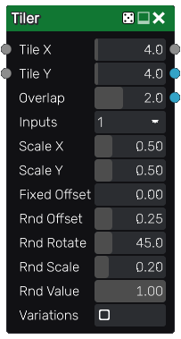

Tiler node
The Tiler node tiles several instances of its input with optional scale and rotation variations. Overlapping instances are mixed with each other using a lighten filter.
The Tiler also has a color version whose input is in RGBA format.
Inputs
The Tiler node accepts two inputs:
The Source inputs is the image to be splat into the output.
The Mask input is a grayscale image that is used as a mask and affects each instance’s value.
Outputs
The Tiler node outputs the splat image and a secondary output that assigns a random color to each tile.
The grayscale tiler has a third output that assigns a UV layout to each tile.
Parameters
The Tiler node accepts the following parameters:
Tile X and Tile Y, the number of columns and rows of of the tile pattern.
Overlap is the number of overlapping instances for each instance.
Inputs is the number of alternate shapes in the input (1, 4 or 16). Images containing several shapes can easily be created using the Tile2x2 node.
Scale X and Scale Y are the scale along X and Y axes applied to each instance.
Fixed Offset is an offset applied to all odd lines.
Offset is the maximum random offset applied to each instance (relative to tiles size).
RndRotate is the maximum angle of the random rotation applied to each instance.
RndScale is the amount of random scaling applied to each instance.
RndValue is the amount of random value applied to each instance.
Variations: if checked, the node will tile different variations of its input (i.e. roll a different seed for each instance)
Example images